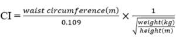

RESEARCH ARTICLES
Adiposity Indices and Ankle Brachial Index as Cardiovascular Risk Prediction Tool in Acute Myocardial Infarction
Anwar Hasan Siddiqui1, Rajiv Gulati1, Imran Khan1, Akif Ahsan2, Anjum Parvez3, and Najmul Islam2
1Department of Physiology, 2Department of Biochemistry, 3Department of Medicine, Jawarlal Nehru Medical College, Aligarh Muslim University, Aligarh, India
Correspondence: only.anwar@gmail.com (A.H.S.)
Siddiqui AH et al. Reactive Oxygen Species 4(11):351–361, 2017; ©2017 Cell Med Press
http://dx.doi.org/10.20455/ros.2017.857
(Received: February 27, 2017; Revised: July 10, 2017; Accepted: July 11, 2017)
ABSTRACT | Obesity associated lipid peroxidation is thought to play a crucial role in the generation of atherosclerotic lesions of acute myocardial infarction (AMI). The ankle-brachial pressure index (ABI), an easily accessible, inexpensive bedside test can be a significant tool to assess the vascular risk in symptomatic and asymptomatic cardiovascular patients. The study assessed the anthropometric indices of obesity and the oxidative stress profile in acute myocardial infarction patients and compared the finding with control subjects. In this cross-sectional study, 200 subjects (AMI:120; Controls: 80) were included. The lipid profile and all other routine laboratory investigations including the cardiac biomarkers were performed. Obesity indices such as body mass index (BMI), waist to hip ratio (WHR), atherogenic index (AI), and conicity index (CI) were recorded using appropriate formulae. Antioxidant status was determined by measuring the serum levels of glutathione peroxidase (GPx), catalase and superoxide dismutase (SOD), and the total antioxidant capacity (TAC). Estimation of malondialdehyde (MDA), a marker of lipid peroxidation was used as a surrogate marker of free radical activity. Atherosclerotic changes were assessed by the ankle brachial index (ABI). The antioxidant enzymes GPx, catalase and SOD were significantly decreased (p < 0.05) and MDA levels were found to be significantly increased in AMI patients compared to controls. The obesity indices showed a negative correlation with the antioxidant enzymes and a positive correlation with the MDA levels, with WHR and AI showing a significantly strong correlation. The frequency of patients with lower ABI (≤ 0.9) was significantly higher in the AMI group as compared to the controls. In conclusion, obesity reflected by increased obesity indices, in particular waist to hip ratio, is an aggravating factor that disrupts the oxidant-antioxidant balance leading to enhanced oxidative stress. ABI calculation would be able to identify more patients at high risk, and as such, it should be considered routine investigation for cardiovascular risk prediction.
KEYWORDS | Acute myocardial infarction; Ankle brachial index; Atherogenic index; Conicity index; Malondialdehyde; Obesity; Oxidative stress
ABBREVIATIONS | ABI, ankle brachial index; AI, atherogenic index; AIP, atherogenic index of plasma; AMI, acute myocardial infarction; BMI, body mass index; CAD, coronary artery disease; CI, conicity index; CK-MB, creatine kinase isoenzyme MB; GPx, glutathione peroxidase; HDL-c, high-density lipoprotein cholesterol; LDL, low-density lipoprotein; MDA, malondialdehyde; ROS, reactive oxygen species; SOD, superoxide dismutase; TAC, total antioxidant capacity; TC, total cholesterol; TG, triglyceride; WHR, waist to hip ratio
CONTENTS
1. Introduction
2. Methods
2.1. Study Design
2.2. Anthropometry
2.3. Measurement of Ankle Brachial Pressure Index
2.4. Blood Collection and Biochemical Analysis
2.4.1. Cardiac Biomarkers
2.4.2. Antioxidant Enzymes
2.4.3. Oxidative Stress Marker: Malondialdehyde
2.4.4. Total Antioxidant Capacity
2.4.5. Lipid Profile
2.5. Statistical Analysis
3. Results
4. Discussion
5. Conclusion
6. Limitations of the Study
1. INTRODUCTION
Acute myocardial infarction (AMI), owing to its explosive rise in incidence has been predicted to be the leading cause of morbidity and mortality worldwide [1]. An estimated 17.5 million people died from cardiovascular disease in 2012, representing 31% of all global deaths, and of these deaths, around 8.4 million were due to AMI. The most common cause of AMI is atherosclerotic coronary artery disease (CAD) with erosion or rupture of a plaque causing transient, partial or complete arterial occlusion [2]. Although the occlusion of coronary artery is known to cause AMI the pathophysiology behind it is complex and multifactorial. Apart from the several documented risk factors associated with AMI, including hypertension, hyperlipidemia, diabetes, family history, smoking, and obesity, oxidative stress has now been implicated in causing major tissue injury during AMI [3].
Oxidative stress is a condition in which oxidant metabolites exert their toxic effect either because of an increased production of these metabolites or decreased antioxidant defense mechanism of the body [4]. Oxygen free radicals or reactive oxygen species (ROS) are capable of damaging compounds of all biochemical classes; including nucleic acids, proteins, lipids, lipoproteins, carbohydrates, and connective tissue macromolecules. ROS are formed at all times in all aerobic cells, and the steady state concentration of ROS in each cell or compartment depends on the formation rate of ROS, their reactivity, and the concentration of available reaction partners. The antioxidant scavenger system, which includes antioxidants vitamins and enzymes like superoxide dismutase (SOD), catalase, and glutathione peroxidase (GPx), keeps a check on the ROS activity. When there is an excessive addition of oxidants from exogenous sources to the endogenous production, the available tissue defense system becomes overwhelmed resulting in oxidative damage to the tissues [5]. Increased oxidative stress and the generation of the free oxygen radicals can result in modification of low-density lipoprotein (LDL) to oxidized LDL that could lead to atherosclerotic lesions, which is central to the genesis of AMI [6].
Overweight and obesity are associated with increased risk of developing cardiovascular disease [7, 8]. Obesity is discussed as an independent risk factor for CAD because of its associations with oxidative stress and inflammation [9]. The accumulation of abdominal fat, leading to visceral adiposity has been implicated as an important contributor to increased oxidative stress in AMI. It has been shown that intra-abdominal fat has a stronger relationship with risk of obesity-related cardiovascular morbidity than with overall adiposity [10]. Therefore, waist to hip ratio (WHR) can be used along with body mass index (BMI) for the evaluation of intra-abdominal mass and total fat. Another index of abdominal adiposity is the conicity index (CI). This has a theoretical range and does not require the hip circumference to assess fat distribution. Atherogenic index (AI) and ankle brachial index (ABI) are new markers of atherogenicity, and have been shown to be valuable for assessing atherogenic risk in the population [11].
Although AMI is extensively studied, the role of obesity and oxidative stress as important risk factors is poorly explained with reference to AMI. The current study was undertaken to have a complete analysis of the oxidative stress and the antioxidant profile in AMI. The study focused on multiple aspects that are involved in the pathogenesis of AMI such as oxidative stress molecules, antioxidant defense component, total antioxidant capacity (TAC), metabolic parameters (blood glucose and lipid profile), ankle brachial index, and anthropometric adiposity indices (body mass index, waist to hip ratio, atherogenic index and conicity index). Thus, it incorporated a detailed biochemical and anthropometric analysis of AMI which is rarely seen in any previous studies.
2. METHODS
2.1. Study Design
The study involved physiological and biochemical evaluation of 120 patients of newly diagnosed AMI admitted in the coronary care unit. The diagnosis of AMI was based on a history of prolonged ischemic chest pain, which lasted for up to 3 h, ECG changes (ST elevation of 2 mm or more in at least two leads) and elevated creatine kinase isoenzyme MB (CK-MB) and troponin T within 12 h after the onset of pain. The control group consisted of 80 healthy, age-matched subjects recruited from the institution. The study was duly approved by the Board of Studies/Institutional Ethical Committee and a valid and informed consent was obtained from all the subjects (both cases and controls). Inclusion criteria were patients with diagnosis of AMI and admitted within 24 h of onset of symptom. Exclusion criteria were patients/control with any history of diabetes mellitus, asthma, smoking, oral antioxidant or vitamin intake.
2.2. Anthropometry
A digital scale, with an accuracy of ±100 g, was used to measure body weight. Standing body height was measured to the nearest 0.5 cm with a commercial stadiometer without shoes with the shoulders in a relaxed position and the arms hanging freely. Waist circumference (WC) was measured, at the level midway between the lower rib margin and the iliac crest at the end of a normal expiration with arms relaxed at the sides. Hip circumference (HC) was measured at the fullest point around the buttocks. WC (cm) was divided by HC (cm) to calculate waist to hip ratio (WHR). Normal reference value for WRH is < 0.85 in females and < 0.95 in males.
The CI was determined through the measurements of weight, height, and WC, by using the following mathematical equation: 
{kind=link}
2.3. Measurement of Ankle Brachial Pressure Index
The ABI is the ratio of the blood pressure in the lower legs to the blood pressure in the arms. The American Heart Association (AHA) recommendations were taken into consideration for ABI calculation [12]. After resting the subjects for 5 min in a supine position, brachial artery systolic and diastolic blood pressure were recorded in both arms using a mercury sphygmomanometer. The higher one of the two arms’ pressure was taken as index arm. In all cases, ankle pressure in both ankles was measured by Doppler with 8 MHz probe which is the gold standard. The leg with lower systolic pressures was taken as index leg. ABI was calculated by dividing the average systolic blood pressure of the index ankle artery by the average systolic blood pressure of the index arm. A resting ABI value ≤ 0.90 defines the presence of peripheral arterial disease.
2.4. Blood Collection and Biochemical Analysis
Ten ml of blood sample was drawn under an aseptic condition from the peripheral vein of the subjects of both the sexes. The sample was centrifuged at 3,000 rpm for 15 min. The serum was subjected to biochemical analysis.
2.4.1. Cardiac Biomarkers
CK-MB was assessed by kits from Enzopak (Reckon Diagnostics, India). Troponin-I assay was based on microparticle enzyme immunoassay (MEIA) technology using AxSYM Troponin-I ADV reagent pack (Abbott Laboratories, USA).
2.4.2. Antioxidant Enzymes
Serum SOD activity was determined by method of McCord and Fridovich [13]. Superoxide was generated in a system comprising NADH and phenazine methosulphate. The superoxide anions reduced nitroblue tetrazolium, forming blue formazone, which was measured at 560 nm. SOD inhibited the reduction of nitroblue tetrazolium and thus, enzyme activity was measured by monitoring the rate of decrease in optical density at 560 nm. Enzyme activity was expressed as units per mg of serum protein. The protein content of serum was measured by the method of Lowry et al. [14].
Serum GPx activity was determined by the procedure of Paglia et al. [15]. Briefly, the oxidized glutathione produced during GPx enzyme reaction was immediately reduced by NADPH and glutathione reductase. Therefore, the rate of NADPH consumption was monitored as a measure of formation of oxidized glutathione. Results were expressed as nmol of NADPH oxidized/min /mg serum protein.
Serum catalase activity was measured following the method of Aebi [16] as described elsewhere [17] with minor modifications. Briefly, the activity was determined by measuring the decrease in absorbance at 240 nm of a reaction mixture consisting of H2O2, in phosphate buffer, pH 7.0, and requisite volume of serum sample. The specific activity was calculated and expressed as µmoles/min/mg serum protein.
2.4.3. Oxidative Stress Marker: Malondialdehyde
Malondialdehyde (MDA) levels were estimated by thiobarbituric acid (TBA) reaction. In the presence of 40% trichloroacetic acid, proteins were precipitated from 0.5 ml serum, and the precipitated proteins were incubated with TBA reagent in a boiling water bath for 60 min. The colored complex that occurred was chilled to room temperature and measured by using a spectrophotometer at 533 nm. Concentrations of MDA were expressed in μM.
2.4.4. Total Antioxidant Capacity
The TAC was estimated by the FRAP (ferric reducing ability of plasma) assay. The antioxidant power of the plasma converts ferric ions to ferrous ions at low pH forming a pink colored ferrous tripyridyl triazine (FeIII-TPTZ) complex. Ferric reducing antioxidant power values were obtained by comparing the change in the absorbance at 593nm in mixture with those of ferrous ion of known concentration. The TAC in plasma was expressed as nmol/ml.
2.4.5. Lipid Profile
Serum Lipid profile parameters such as total cholesterol, triglycerides (TG), LDL-cholesterol, and HDL-cholesterol (HDL-c) were analyzed by using kits supplied by Pointe Scientific Inc. (Michigan, USA). The atherogenic index of plasma (AIP) was calculated as log(TG/HDL-c)
2.5. Statistical Analysis
Statistical analysis was done, using the Statistical Package for the Social Sciences (SPSS 21.0) for Windows Software and Microsoft Excel 2007. Continuous variables were tested for normal distribution by Kolmogorov–Smirnov test and expressed as mean ± standard deviation. Categorical data are expressed as counts and percentages. The data from patients and controls were compared using Student’s t-test. Pearson’s correlation coefficients were determined between the measured parameters at 5% level of significance. For all analyses, a 2-sided value of p < 0.05 was considered statistically significant.
3. RESULTS
Table 1 depicts the demographic and clinical characteristics of the study groups. There was no statistically significant difference between the two groups with respect to age (p = 0.277) or gender (p = 0.832). Cardiac markers (CK-MB, and troponin) and systolic blood pressure were significantly increased in the AMI group. All of the obesity indices, including body mass index, waist to hip ratio, and conicity index were found to be significantly increased in the AMI group.
| TABLE 1. Demographic data, and clinical characteristics of the healthy control individuals and AMI patients | |||
| Control (n = 80) | AMI (n = 120) | p Value | |
| Age (years) | 45.75 ± 7.64 | 48.50 ± 6.86 | 0.277 |
| Sex (male:female) | 57:23 | 88:32 | 0.832 |
| Weight (kg) | 60.27 ± 7.73 | 65.53 ± 6.43 | 0.001 |
| Height (cm) | 163.06 ± 6.38 | 162.76 ± 5.93 | 0.408 |
| Body mass index (kg/m2) | 22.64 ± 2.18 | 25.57 ± 3.01 | 0.01 |
| Waist-to-hip ratio | 0.84 ± 0.08 | 0.97 ± 0.10 | 0.001 |
| Conicity index | 1.14 ± 0.06 | 1.30 ± 0.10 | 0.01 |
| Systolic blood pressure (mm Hg) | 119.75 ± 7.50 | 129.94 ± 15.58 | 0.021 |
| Diastolic blood pressure (mm Hg) | 79.85 ± 8.63 | 83.30±11.82 | 0.376 |
| Creatine kinase isoenzyme MB | 12 ± 0.07 | 97 ± 7.8* | 0.001 |
| Troponin I (ng/ml) | 0.24 ± 0.11 | 1.56 ± 1.03 | 0.002 |
| Note: Data are presented as mean ± standard deviation. | |||
Table 2 depicts the lipid profile comparison between the controls and the AMI patients. As shown, except for HDL-c, all the other lipid profile parameters were significantly raised in the AMI patients. Atherogenic index, the surrogate marker of atherogenicity, also showed a significant increase (p = 0.01) in the AMI group.
| TABLE 2. Lipid profile of the healthy control individuals and AMI patients | |||
| Control (n = 80) | AMI (n = 120) | p Value | |
| Total cholesterol | 174.21 ±17.89 | 218.73 ± 24.41 | 0.001 |
| Triglyceride | 126.28 ± 19.83 | 187.07 ± 31.23 | 0.001 |
| HDL-cholesterol | 49.62 ± 6.12 | 39.82 ± 8.86 | 0.059 |
| LDL-cholesterol | 102.42 ± 18.73 | 135.28 ± 21.04 | 0.001 |
| Atherogenic index | 0.34 ± 0.23 | 0.53 ± 0.25 | 0.01 |
| Note: Data are presented as mean ± standard deviation. | |||
Table 3 illustrates the comparison of antioxidant enzymes, total antioxidant capacity, and the oxidative stress marker malondialdehyde between the two groups. All the measured antioxidant enzymes including SOD, GPx, and catalase were significantly decreased in the AMI patients. AMI patients also showed a significant decrease in TAC (p = 0.001). MDA level on the other hand was found to be significantly increased in the AMI group (p = 0.002).
| TABLE 3. Antioxidants and oxidative stress profile in healthy control individuals and AMI patients | |||
| Control (n = 80) | AMI (n = 120) | p Value | |
| Serum SOD (U/mg protein) | 9.33 ± 0.28 | 8.92 ± 0.06 | 0.001 |
| Serum GPx (nmol/min/mg protein) | 57.16 ± 0.32 | 49.18 ± 0.39 | 0.003 |
| Serum catalase (U/mg protein) | 9.07 ± 0.07 | 8.68±0.02 | 0.001 |
| Total antioxidant capacity (μM) | 1242.8 ± 30.3 | 883.54±72.87 | 0.001 |
| Serum malondialdehyde (μM) | 1.21 ± 0.06 | 1.49 ± 0.11 | 0.002 |
| Note: Data are presented as mean ± standard deviation. | |||
Figure 1 shows the box-plot comparison of ABI, the marker of peripheral atherosclerosis in both the groups. As shown, the mean ABI was decreased in the AMI group but the decrease was not found to be significant when compared to the controls ((p = 0.382). However, the frequency of AMI patients with lower ABI (≤ 0.9) was significantly higher compared to the frequency of control with lower ABI (34.17% and 7.5%, respectively; p = 0.0045, Table 4).
{kind=link}
FIGURE 1. Box-plot comparing ankle brachial index (ABI) in control and AMI cases. Values are presented as mean ± standard deviation.
| TABLE 4. Correlation coefficient ‘r’ of anthropometric indices with oxidative stress and antioxidant molecules by Pearson correlation | ||||
| SOD | GPx | Catalase | Malondialdehyde | |
| Body mass index | −0.103 | 0.013 | ‒0.056 | 0.035 |
| Waist-to-hip ratio | ‒0.487* | ‒0.624* | ‒0.156 | 0.527* |
| Conicity index | ‒0.013 | ‒0.165 | ‒0.320 | 0.014 |
| Atherogenic index | −0.621* | −0.780* | −0.236 | 0.943* |
| Note: * represents p value < 0.05. | ||||
Table 5 shows the Pearson correlation coefficient (‘r’) of the various obesity indices including body mass index, waist to hip ratio, atherogenic index, and conicity index with the antioxidant enzymes and oxidative stress marker MDA. All the obesity indices showed a negative correlation with the antioxidant enzymes except for a weak positive correlation between the body mass index and GPx. In contrary, all the adiposity indices were positively correlated with MDA levels. Among the adiposity indices, waist to hip ratio and atherogenic index were found to have significant strong negative correlation with SOD and GPx. Similarly, they were also found to have a significantly strong positive correlation with MDA levels (r = 0.527 and r = 0.943, respectively).
| TABLE 5. Distribution of ABI within patient and control groups | ||||||
| ABI | Patient | Control | Total | |||
| n | % | n | % | n | % | |
| ≤ 0.9 | 41 | 34.16 | 6* | 7.5 | 47 | 23.50 |
| > 0.9 | 79 | 65.85 | 74 | 92.5 | 153 | 76.50 |
| Total | 120 | 100 | 80 | 100 | 200 | 100 |
| Note: χ2 = 6.064; *, p = 0.045. | ||||||
4. DISCUSSION
Research in the field of cardiovascular science in the last two decades has shown atherosclerosis to be the root cause of AMI. Atherosclerosis, the most common pathologic process underlying cardiovascular disease, represents a state of heightened oxidative stress characterized by lipid and protein oxidation in the vascular wall [18]. Oxidation of low-density lipoproteins is considered a key initial step in atherosclerosis and CAD development and progression [19]. Various risk factors have been implicated in the genesis of AMI such as heredity, dyslipidaemia, hypertension, lifestyle stress, and obesity. Obesity has been clearly established as an independent risk factor for the development of CAD and AMI [20]. It has been demonstrated that excess body fat is an important risk factor for AMI. Investigators have shown that central obesity or visceral fat more accurately reflects abnormal metabolic status than excess fat alone or obesity per se [21]. Visceral adipose tissue is a major site of cytokine production that contributes to atherosclerotic progression. It plays a major role in insulin resistance and dyslipidemia and in the induction of prothrombotic and inflammatory states, which is central to the onset of AMI [22]. In the present study, all the obesity indices (BMI, WHR, CI) showed a significant difference between control and AMI group (Table 1). Central obesity has been reported to be associated with increased morbidity and mortality in patients with CAD [22, 23]. Heitman et al. [24] reported that waist to hip ratio is a dominant, independent and predictive variable of cardiovascular disease and coronary heart disease deaths. The present study is in good agreement with the observations of the above studies.
Dyslipidemia is a well-established risk factor for the development of AMI which is a lipid-driven disease. A previous study has shown that severe hypertriglyceridemia is positively correlated with the mortality of CAD [25]. A statistically significant association between thrombosis caused by plaque rupture and high TC, low HDL-c, and high TC/HDL-C ratio in men has been evaluated by Burke et al. [26]. The common combined occurrence of high fasting blood concentrations of TG and low levels of HDL-c has been referred to as atherogenic dyslipidemia. In the present study, the lipid profile of AMI subjects showed that except for HDL-c all other parameters were significantly elevated as compared to the control group. The mean HDL-c was also increased in AMI group but the increase was not statistically significant. The present findings were consistent with previous studies [27]. Recently, more studies have been focused on the ratio of TG to HDL-c, referred to as atherogenic index, which is a surrogate of small LDL particle size. A high ratio of TG/HDL-C represented a larger group of small, dense proatherogenic LDL particles, which is strongly correlated to the initiation and progression of atherosclerosis [28]. Altan et al. found that high AIP is a strong risk factor for CAD in both Turkish men and women [29]. Bittner et al. stated that the atherogenic index ratio was an independent predictor of all-cause mortality in those who have suspected myocardial ischemia [30]. Atherogenic index is considered more sensitive and specific index of cardiovascular risk than total cholesterol alone [31]. In the current study, the mean atherogenic index was significantly higher in AMI groups than in controls, and thus the finding corroborated the results of previous studies.
Oxidative stress has been implicated as one of the most pertinent contributor to the progression of AMI. As a natural protective mechanism, myocardial antioxidants inhibit or delay the oxidative damage that consequently prevents thrombosis; however, a prolonged oxidative stress depletes the body antioxidant level. In the current study, a significant decrease in the antioxidant enzymes SOD, GPx, and catalase was seen in the AMI group. The TAC was also significantly compromised in AMI group as compared to controls. The significant decrease in endogenous antioxidants in the patients could be due to the overwhelming production and accumulation of superoxide anion causing inhibition of antioxidant activity. Many findings suggest that antioxidant depletion has relevant impact on the precipitation of myocardial infarction, and these findings are consistent with the notion that increased levels of antioxidants are protective [32]. Blaustein et al. [33] have demonstrated that GSH is important in protecting the myocardium against ROS injury, and a reduction in cellular GSH content would impair recovery after short periods of ischemia. Experimental studies have shown protective effects of antioxidants against myocardial infarction by inhibiting inflammation and oxidative stress [34].
Increased lipid peroxidation is thought to be a consequence of oxidative stress, which occurs when the dynamic balance between pro-oxidant and antioxidant mechanism is impaired. It has been suggested that there are increased lipid peroxide levels in blood of patients with AMI. In the present study, lipid peroxidation product, MDA was significantly increased (p = 0.002) in AMI patients as compared to control which is indicative of elevated oxidative stress in AMI patients. Our results are consistent with other researchers’ findings where they showed significant increase in the lipid peroxidation products in blood of AMI patients following an acute event [35]. Lipid peroxidation leads to alteration in the intrinsic membrane properties due to physicochemical changes of oxidized lipids. The increased level of MDA suggests that lipid damage observed in the current study may be a result of the AMI pathology itself.
The current study also reflected a negative correlation of the antioxidant enzymes with that of obesity indices, with the exception of GPx, which showed a nonsignificant mild positive correlation. MDA level on the other hand was positively correlated. Among the obesity indices, WHR and atherogenic index showed a significantly strong negative correlation with the antioxidant enzymes and a significantly strong positive correlation with MDA level. Thus, WHR and atherogenic index can be said to be better predictors of cardiovascular risk and oxidative stress in AMI than any other obesity index. The INTERHEART study, a multinational case-control study of risk factors for first myocardial infarction [7] also found WHR to be predictive of first myocardial infarction even in individuals with normal BMI range. A similar finding has also been reported by Siddiqui et al [36].
The present study took into account another factor to assess the cardiovascular risk, the ABI. ABI value is implemented as an easy and noninvasive method for early determination of atherosclerotic lesions. Many studies have shown that atherosclerosis incidence increases in cases with ABI ≤ 0.9. The results of the present analyses showed that although no significant difference in ABI was seen between the AMI and control group, the frequency of patients with lower ABI (≤ 0.9) was significantly higher in the AMI group as compared to the controls (34.16% and 7.5%, respectively; p = 0.045, Table 5). An ABI ≤ 0.9 has been consistently associated with a 2 to 5-fold increase in all-cause death and a 3 to 8-fold increase in cardiovascular death when compared with an ABI > 0.9 [37, 38]. Thus, ABI calculation would be able to identify more patients at high cardiovascular risk and should be considered routine investigation for cardiovascular risk prediction.
5. CONCLUSION
The present study is suggestive of imbalance between oxidant and antioxidants in AMI patients. The decreased activities of antioxidant enzymes may be a compensatory regulation in response to increased oxidative stress. Obesity reflected by an increased WHR has been clearly demonstrated as an aggravating factor which further increases oxidative stress and disrupts the oxidant-antioxidant balance. Thus, weight reduction and dietary antioxidant supplement may be hypothesized to have an important prognostic value in cases of AMI. The present results also suggest that AI and ABI should be used as a standard risk assessment for cardiovascular disease.
6. LIMITATIONS OF THE STUDY
The present study has several limitations. It is a single-center study; hence, scope of the findings might be limited. Further, the findings of the study were substantiated from comparatively smaller sample-size data. There could also be a selection bias in our study since the sample chosen was from the hospital and not a random sample from the population. Duration of risk factors was not taken into consideration for analyzing the data, which can also be considered as another limitation of the present study. Longitudinal studies investigating the interaction between modifiable and nonmodifiable risk factors are needed to further our understanding of the etiology of oxidative stress in AMI. Therefore, we recommend fellow researchers to conduct a multi-center study involving large-sample size for further investigation and confirmation of the present findings.
ACKNOWLEDGMENTS
A.H.S. and R.G. designed the data tool, collected the data, and were involved in initial data analysis and drafting of the manuscript. I.K. and A.A. had oversight of all the stages of the research and reviewed the final draft for academic content. A.P. and N.I. analyzed the data and critically reviewed the final manuscript. All authors approved the final manuscript and declare no conflicts of interest. The authors wish to acknowledge the help and support of the laboratory staff who unconditionally helped in all the lab investigations related to the study.
REFERENCES
- Ojha SK, Nandave M, Arora S, Narang R, Dinda AK, Arya DS. Chronic administration of Tribulus terrestris Linn extract improves cardiac function and attenuates myocardial infarction in rats. Int J Pharmacol 2008; 4:1‒10.
- World Hear Federation: Hypertension and cardiovascular disease. http://www.world-heart-federation.org/cardiovascular-health/cardiovascular-disease-risk-factors/hypertension/ (accessed on June 21,2016).
- Kasap S, Gonenc A, Sener DE, Hisar I. Serum cardiac markers in patients with acute myocardial infarction: oxidative stress, C-reactive protein and N-terminal probrain natriuretic Peptide. J Clin Biochem Nutr 2007; 41(1):50‒7. doi: 10.3164/jcbn.2007007.
- Block G, Dietrich M, Norkus EP, Morrow JD, Hudes M, Caan B, et al. Factors associated with oxidative stress in human populations. Am J Epidemiol 2002; 156(3):274‒85.
- Srinivas K, Bhaskar MV, Aruna Kumari R, Nagaraj K, Reddy KK. Antioxidants, lipid peroxidation and lipoproteins in primary hypertension. Indian Heart J 2000; 52(3):285‒8.
- Libby P. Vascular biology of atherosclerosis: overview and state of the art. Am J Cardiol 2003; 91(3A):3A‒6A.
- Yusuf S, Hawken S, Ounpuu S, Bautista L, Franzosi MG, Commerford P, et al. Obesity and the risk of myocardial infarction in 27,000 participants from 52 countries: a case-control study. Lancet 2005; 366(9497):1640‒9. doi: 10.1016/S0140-6736(05)67663-5.
- Calle EE, Thun MJ, Petrelli JM, Rodriguez C, Heath CW, Jr. Body-mass index and mortality in a prospective cohort of U.S. adults. N Engl J Med 1999; 341(15):1097‒105. doi: 10.1056/NEJM199910073411501.
- Keaney JF, Jr., Larson MG, Vasan RS, Wilson PW, Lipinska I, Corey D, et al. Obesity and systemic oxidative stress: clinical correlates of oxidative stress in the Framingham Study. Arterioscler Thromb Vasc Biol 2003; 23(3):434‒9. doi: 10.1161/01.ATV.0000058402.34138.11.
- Ho SC, Chen YM, Woo JL, Leung SS, Lam TH, Janus ED. Association between simple anthropometric indices and cardiovascular risk factors. Int J Obes Relat Metab Disord 2001; 25(11):1689‒97. doi: 10.1038/sj.ijo.0801784.
- Nwagha UI, Ikekpeazu EJ, Ejezie FE, Neboh EE, Maduka IC. Atherogenic index of plasma as useful predictor of cardiovascular risk among postmenopausal women in Enugu, Nigeria. Afr Health Sci 2010; 10(3):248‒52.
- Aboyans V, Criqui MH, Abraham P, Allison MA, Creager MA, Diehm C, et al. Measurement and interpretation of the ankle-brachial index: a scientific statement from the American Heart Association. Circulation 2012; 126(24):2890‒909. doi: 10.1161/CIR.0b013e318276fbcb.
- McCord JM, Fridovich I. Superoxide dismutase. An enzymic function for erythrocuprein (hemocuprein). J Biol Chem 1969; 244(22):6049‒55.
- Lowry OH, Rosebrough NJ, Farr AL, Randall RJ. Protein measurement with the Folin phenol reagent. J Biol Chem 1951; 193(1):265‒75.
- Paglia DE, Valentine WN. Studies on the quantitative and qualitative characterization of erythrocyte glutathione peroxidase. J Lab Clin Med 1967; 70(1):158‒69.
- Aebi H. Catalase in vitro. Method Enzymol 105. 1984: 105:114‒21.
- Mittal M, Flora SJ. Vitamin E supplementation protects oxidative stress during arsenic and fluoride antagonism in male mice. Drug Chem Toxicol 2007; 30(3):263‒81. doi: 10.1080/01480540701380075.
- Stocker R, Keaney JF, Jr. Role of oxidative modifications in atherosclerosis. Physiol Rev 2004; 84(4):1381‒478. doi: 10.1152/physrev.00047.2003.
- Witztum JL. The oxidation hypothesis of atherosclerosis. Lancet 1994; 344(8925):793‒5.
- Eva S, Oliver R, Eva L. Markers of oxidative stress in acute myocardial infarction treated by percutaneous coronary intervention. Cent Eur J Med 2009; 4(1):26‒31.
- Wannamethee SG, Shaper AG, Lennon L, Whincup PH. Decreased muscle mass and increased central adiposity are independently related to mortality in older men. Am J Clin Nutr 2007; 86(5):1339‒46.
- Lee SH, Park JS, Kim W, Shin DG, Kim YJ, Kim DS, et al. Impact of body mass index and waist-to-hip ratio on clinical outcomes in patients with ST-segment elevation acute myocardial infarction (from the Korean Acute Myocardial Infarction Registry). Am J Cardiol 2008; 102(8):957‒65. doi: 10.1016/j.amjcard.2008.06.022.
- Zeller M, Steg PG, Ravisy J, Lorgis L, Laurent Y, Sicard P, et al. Relation between body mass index, waist circumference, and death after acute myocardial infarction. Circulation 2008; 118(5):482‒90. doi: 10.1161/CIRCULATIONAHA.107.753483.
- Heitmann BL, Frederiksen P, Lissner L. Hip circumference and cardiovascular morbidity and mortality in men and women. Obes Res 2004; 12(3):482‒7. doi: 10.1038/oby.2004.54.
- Neil HA, Cooper J, Betteridge DJ, Capps N, McDowell IF, Durrington PN, et al. All-cause and cardiovascular mortality in treated patients with severe hypertriglyceridaemia: A long-term prospective registry study. Atherosclerosis 2010; 211(2):618‒23. doi: 10.1016/j.atherosclerosis.2010.03.006.
- Burke AP, Farb A, Malcom GT, Liang YH, Smialek J, Virmani R. Coronary risk factors and plaque morphology in men with coronary disease who died suddenly. N Engl J Med 1997; 336(18):1276‒82. doi: 10.1056/NEJM199705013361802.
- Evans DJ, Hoffmann RG, Kalkhoff RK, Kissebah AH. Relationship of body fat topography to insulin sensitivity and metabolic profiles in premenopausal women. Metabolism 1984; 33(1):68‒75.
- Dobiasova M, Frohlich J. The plasma parameter log (TG/HDL-C) as an atherogenic index: correlation with lipoprotein particle size and esterification rate in apoB-lipoprotein-depleted plasma (FER(HDL)). Clin Biochem 2001; 34(7):583‒8.
- Onat A, Can G, Kaya H, Hergenc G. Atherogenic index of plasma (log10 triglyceride/high-density lipoprotein-cholesterol) predicts high blood pressure, diabetes, and vascular events. J Clin Lipidol 2010; 4(2):89‒98. doi: 10.1016/j.jacl.2010.02.005.
- Bittner V, Johnson BD, Zineh I, Rogers WJ, Vido D, Marroquin OC, et al. The triglyceride/high-density lipoprotein cholesterol ratio predicts all-cause mortality in women with suspected myocardial ischemia: a report from the Women’s Ischemia Syndrome Evaluation (WISE). Am Heart J 2009; 157(3):548‒55. doi: 10.1016/j.ahj.2008.11.014.
- Genest J, Frohlich J, Fodor G, McPherson R, Working Group on H, Other D. Recommendations for the management of dyslipidemia and the prevention of cardiovascular disease: summary of the 2003 update. CMAJ 2003; 169(9):921‒4.
- Tomoda H, Morimoto K, Aoki N. Superoxide dismutase activity as a predictor of myocardial reperfusion and salvage in acute myocardial infarction. Am Heart J 1996; 131(5):849‒56.
- Blaustein A, Deneke SM, Stolz RI, Baxter D, Healey N, Fanburg BL. Myocardial glutathione depletion impairs recovery after short periods of ischemia. Circulation 1989; 80(5):1449‒57.
- Zhou SX, Zhou Y, Zhang YL, Lei J, Wang JF. Antioxidant probucol attenuates myocardial oxidative stress and collagen expressions in post-myocardial infarction rats. J Cardiovasc Pharmacol 2009; 54(2):154‒62. doi: 10.1097/FJC.0b013e3181af6d7f.
- Bagatini MD, Martins CC, Battisti V, Gasparetto D, da Rosa CS, Spanevello RM, et al. Oxidative stress versus antioxidant defenses in patients with acute myocardial infarction. Heart Vessels 2011; 26(1):55‒63. doi: 10.1007/s00380-010-0029-9.
- Siddiqui AH, Gulati R, Tauheed N, Pervez A. Correlation of waist-to-hip ratio (WHR) and oxidative stress in patients of acute myocardial infarction (AMI). J Clin Diagn Res 2014; 8(1):4‒7. doi: 10.7860/JCDR/2014/6446.3912.
- Ogren M, Hedblad B, Isacsson SO, Janzon L, Jungquist G, Lindell SE. Ten year cerebrovascular morbidity and mortality in 68 year old men with asymptomatic carotid stenosis. BMJ 1995; 310(6990):1294‒8.
- Siddiqui AH, Tauheed N, Gulati R. Ankle brachial pressure index (ABI), a cardiovascular risk prediction tool. Int J Basic Appl Physiology; 2013; 2(1):67‒71.